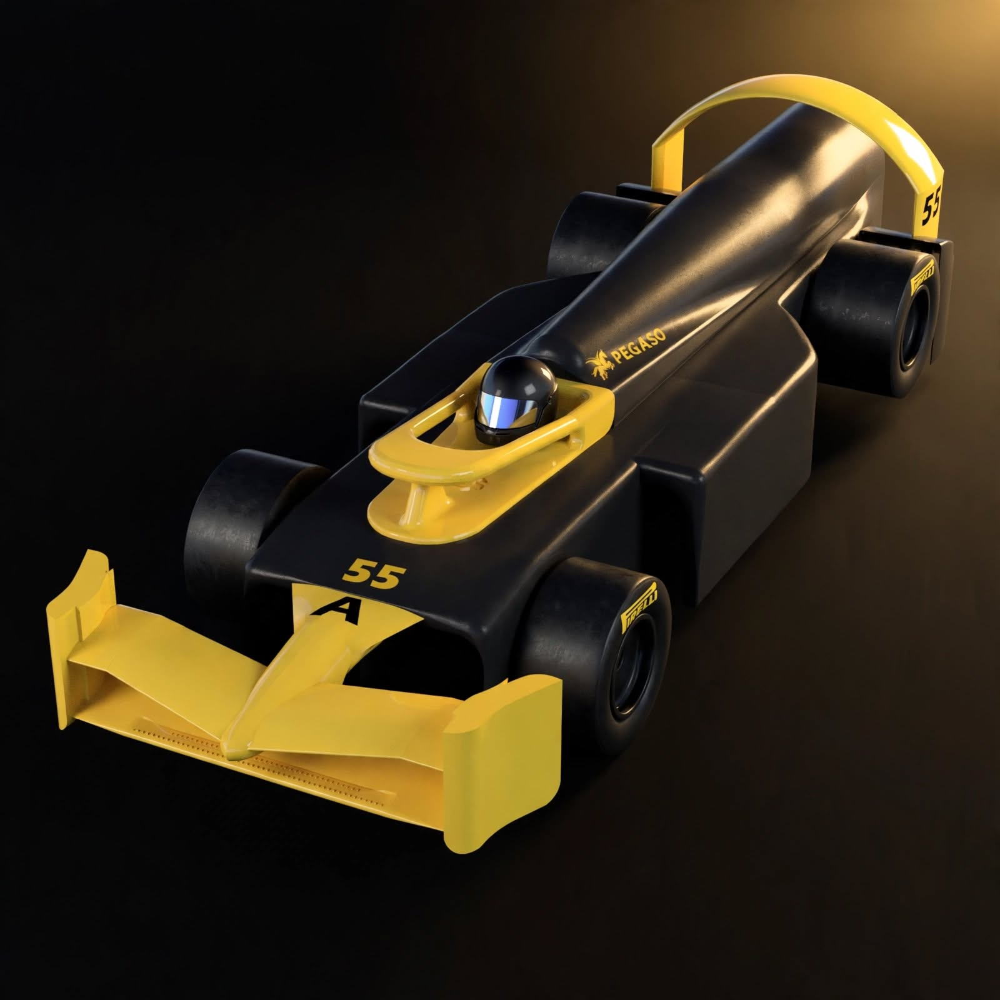

Ala sottile con incidenza minima, per generare meno resistenza possibile. I supporti sono nascosti nella carrozzeria coì che l'aria arrivi pulita senza il disturbo delle ruote
NACA 0006Ispirato alle gare di accelerazione e alla Formula 1. La prima versione era troppo flessibile, l'abbiamo rifatta con supporti più resistenti. Curva verso l'alto per mandare l'aria fuori dalle ruote. Disegnato su carta, poi realizzato in 3D con Fusion 360.
Fusion 360Fiancate e diffusore ridisegnati, vettura più stretta, fondo rifatto per far passare l'aria sotto. Un piccolo elemento divide l'aria sopra e sotto. Assi più corti. Ogni sceltaserve a far passare l'aria con meno resistenza possibile.
ANSYS Fluent 15 m/sLa prima versione era larga con il fondo piatto. Ora la vettura è più stretta e affusolata, il fondo ha tre canali che evitano il sollevamento. Un elemento dedicato guida l'aria tra le sezioni.
La stampa 3D da sola è spesso leggera. Un vano deedicato per i pesi, ci permette di aggiungere con precisione il peso minimo del regolamento, tenendo il baricentro al centro.
Prima di stampare, simuliamo il flusso dell'aria: mappe di velocità, pressione e vortici, ci mostrano dove la vettura perde l'energia. Ogni modifica che facciamo passa da qui.